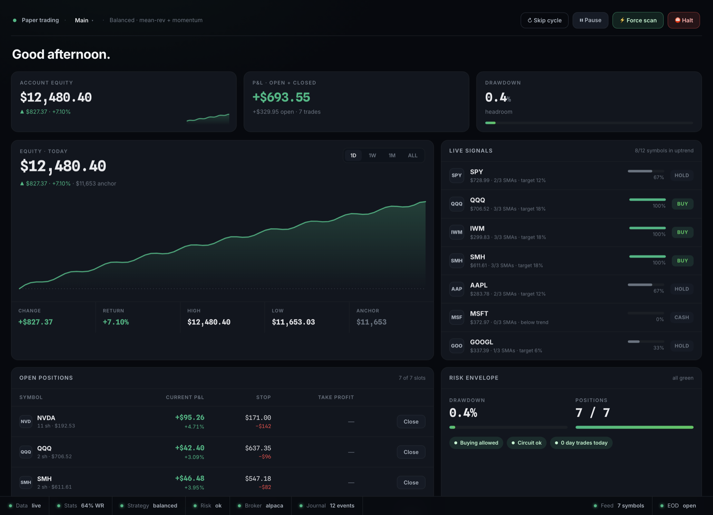

Your broker, your keys, your machine. Practice in paper mode or trade live — Trade Studio runs entirely on your own computer.

A desktop trading bot for macOS and Windows that runs on your computer and trades your brokerage account — Alpaca, Tradier, Interactive Brokers, a crypto exchange, OANDA, or the built-in Simulator — no servers, no sign-up, no data leaving your machine.
Trade Studio watches the market with a set of classic, transparent statistical signals — Bollinger Bands, RSI, MACD and volume on intraday candles. No AI black box, no hype: just rules you can reason about. When the signals line up, it places trades through your own brokerage account and manages them with stop-losses and take-profits.
It's built to keep you in control. The bot boots paused, you can practice risk-free in paper mode for as long as you like, and your API keys are stored only on your machine — Trade Studio has no server and never sees your credentials. It's a tool, not a money machine.
From download to running bot in a few minutes.
One-click installer, no admin needed. Adds a desktop shortcut.
Choose from six backends — or start with no account at all on the Simulator. Paper keys are free.
Drop your keys into the setup wizard — it verifies them read-only before saving.
The bot runs in your system tray and trades for you. Pause anytime.
No servers, no account, no cloud. Your API keys are stored only on your computer.
Practice risk-free with paper trading, or connect your real broker account when you're ready.
Install, paste your keys, press resume. A guided wizard handles the rest.
Classic indicators on intraday candles — transparent rules, no AI black box.
Runs quietly in the background. Open, pause, or quit from the system tray.
Live equity, positions, win-rate and controls — all in a clean local dashboard.
Six backends across stocks, crypto and forex — bring the broker you already use, or start in seconds on the built-in Simulator. Paper trading is free on every broker; only going live needs a subscription.
A built-in fake-money market for stocks & crypto. No broker, no sign-up — the fastest way to try Trade Studio.
No account needed — includedUS stocks & crypto. Free unlimited paper trading, fractional shares.
alpaca.markets ↗US stocks & options. Free developer sandbox for paper trading.
tradier.com ↗100+ exchanges (Coinbase, Kraken, Binance…) via CCXT. Free testnets.
docs.ccxt.com ↗Forex & CFDs. Free practice (demo) accounts for paper trading.
oanda.com ↗Global multi-asset. Free paper trading via the IBKR Gateway.
interactivebrokers.com ↗Trade with simulated money — on your broker's paper account or the built-in Simulator (no sign-up). Zero real-money risk — perfect for learning how the bot behaves before risking a cent.
Connect your funded broker account to trade for real. Gated behind an explicit confirmation, with clear warnings — because real money means real risk of loss.
Paper trading is free forever. Subscribe only when you want to run live accounts with real money.
€0
Unlimited paper accounts — the full bot and dashboard, with zero real-money risk.
€9 / mo
One live account with real money. Or €90/year. Cancel anytime.
€19 / mo
Up to 3 live accounts running in parallel. Or €190/year. Cancel anytime.
| PaperFree | Live Solo€9/mo · €90/yr | Live Plus€19/mo · €190/yr | |
|---|---|---|---|
| Unlimited paper bots | ✓ | ✓ | ✓ |
| All strategies & presets — Classic + VWAP Reclaim, Patient · Balanced · Aggressive | ✓ | ✓ | ✓ |
| Live trading (real money) | — | 1 account | up to 3 |
| Trading schedule — only trade the days & hours you choose | — | ✓ | ✓ |
| Auto-pause risk limits (max drawdown · loss-streak) | — | ✓ | ✓ |
| Crypto trading + crypto presets | — | — | ✓ |
| Local-first — your keys stay on your machine | ✓ | ✓ | ✓ |
| Free auto-updates | ✓ | ✓ | ✓ |
Paper trading is free, forever — unlimited practice accounts, no card required. Live trading with real money is a paid subscription (Live Solo €9/mo, Live Plus €19/mo). You'll also need an account at one of the supported brokers — or none at all if you stick to the built-in Simulator.
No. Your keys are saved only on your own machine (in your local app folder). There's no Trade Studio server and nothing is uploaded anywhere.
There are no guarantees. Trade Studio is a tool that runs a rules-based strategy — it is not financial advice and not a money machine. Trading carries real risk of loss. Start in paper mode.
A Mac (macOS) or a Windows 10/11 PC. To trade a real broker you'll add a free account at one of the six supported backends (Alpaca, Tradier, Interactive Brokers, a crypto exchange, OANDA) — or use the built-in Simulator with no account at all. No Python, no setup beyond pasting your keys.
Yes — the download button always serves the latest release, so you never grab an old build. After installing, Trade Studio also auto-updates itself from inside the app.
The Mac build isn't notarized with an Apple Developer ID yet, so macOS quarantines it on download — sometimes with a “can't be opened,” sometimes a “damaged” message. To run it: drag Trade Studio into your Applications folder, open Terminal, and run this once:
xattr -dr com.apple.quarantine "/Applications/Trade Studio.app"
Then open Trade Studio normally. This just clears the “downloaded from the internet” flag macOS adds to unsigned apps — safe because you got it from this site. A signed build is on the way. On Windows: if SmartScreen appears, click More info → Run anyway.
Yes. Live mode places real orders with your real funds and can lose money. It's gated behind an explicit confirmation. Practice in paper mode first.
Pause it from the dashboard at any time, or quit entirely from the system-tray icon.
Free download for macOS & Windows — paper trading is free forever. The buttons always grab the latest release, so you're never out of date.
xattr -dr com.apple.quarantine "/Applications/Trade Studio.app"
Now open Trade Studio normally (double-click). You only do this once. The command just clears the “downloaded from the internet” flag macOS adds to unsigned apps — safe because you downloaded it here. A signed build is on the way.
Your download has started. The Mac app isn't notarized with an Apple Developer ID yet, so on first launch macOS may say it “can't be opened” or “is damaged.” That's expected — do this once:
xattr -dr com.apple.quarantine "/Applications/Trade Studio.app"
Then open Trade Studio normally — you only do this once. It just clears the “downloaded from the internet” flag macOS adds to unsigned apps (safe, since you got it here). A signed build is on the way; the app auto-updates after this.